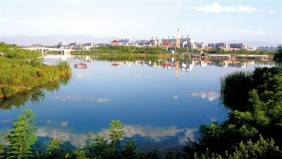

宁夏风光 NING XIA FENG GUANG 欢迎光临我的网站！ |
| 首页 | 塞上新景 | 沙湖苇舟 | 神秘西夏 | 沙坡鸣钟 | 须弥松涛 | 西部影城 |
本站只为介绍宁夏的美丽风光而创建，部分内容采集自互联网，版权归原作者所有
作者联系方式 E-mail: QQ:
|
||||||||||
|
||||||||||
| "水洞兵沟",位于宁夏灵武市临河镇水洞沟村，南距灵武市30公里，西距银川市19公里，北与内蒙古鄂前旗相接，占地面积7.8平方公里。水洞沟地区是三万年前人类繁衍生息的圣地。1923年，法国古生物学家德日进、桑志华在这里发现了史前文化遗址，通过发掘，出土了大量石器和动物化石，水洞沟因此而成为我国最早发现旧石器时代的古人类文化遗址，1988年被国务院公布为“全国重点文物保护单位”，被誉为“中国史前考古的发祥地”。 | ||||||||||
| "贺兰晴雪"，古宁夏八景之一。六月暑日，在景区西边沟尽头的青羊溜山巅上，蓝天晴空，白雪盖顶，这就是古宁夏八景之首的“贺兰晴雪”。自古诗人用“满眼但知银世界，举头都是玉江山”来赞美“贺兰晴雪”胜景。 | ||||||||||
|  | "艾依春晓",艾依河工程南起青铜峡水利枢纽坝下，北至平罗县沙湖，沿途连接数十个湖泊湿地共5万余亩，于2003年开工建设，规划线路总长83公里，目前已建成48公里，成为银川市一道亮丽的风景线。行走在银川市金凤城区东西方向的任何一条街上，总会经过一条南北方向的水系，那就是与银川人相伴多载的艾依河。每个春天的清晨和傍晚，在银川市宁安大街艾依河桥、亲水大街、艾依河陶然水岸等河段附近，伴随着河边嬉戏的鸟雀，总有悠闲散步的市民，他们一起嗅着万物复苏的气息，感受着这条河流的不朽生命力。 | |||||||||
| 网站制作：马宁 本站只为介绍宁夏的美丽风光而创建，部分内容采集自互联网，版权归原作者所有 作者联系方式 E-mail: QQ: |
||||||||||